电脑上位机软件界面：
未连接串口和CAN 分析仪的时候，显示界面如下：
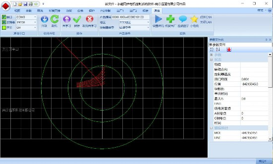
连接串口或者打开CAN 的时候，显示界面如下：
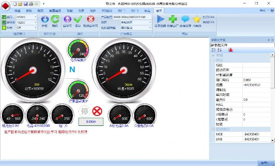
连上控制器后，数据即从控制器上传到上位机页面：
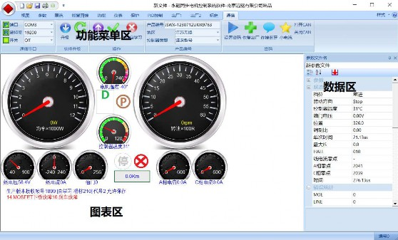
视图中含有仪表盘页面可以动态查看工作参数，通过统计页面实时查看控制器工作的动态特性，通过状态表实时查看控制器工作状态，还可以点“采集”查看第一次加油门后的 2048 组采样的运行数据，不关电的情况下，一直保存于控制器中，比如 0.1 秒采
样一组数据，控制器能有 205 秒的数据记录，用于分析车辆驾驶特性。
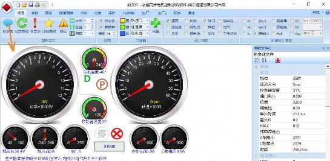
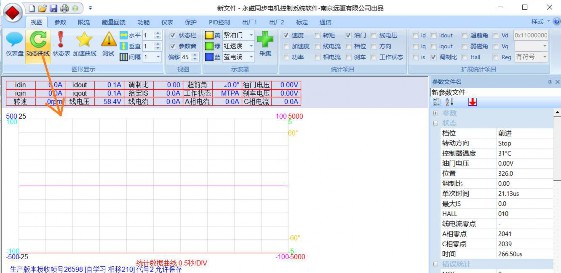
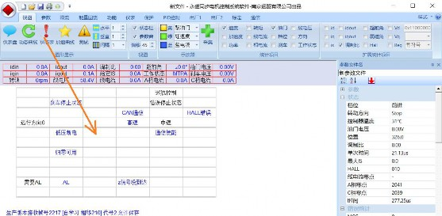
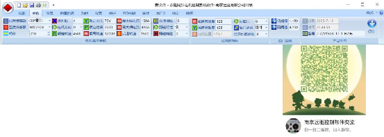
参数
电机基本参数
位置传感器，控制器根据位置传感器不同分 4 种硬件：
霍尔版
增量式编码器版
差分编码器版
绝对值编码器版
旋变编码器版。
序号
选项
控制器硬件
扩展代码
版本
0
120°霍尔
霍尔版控制器
H,R,I
1
常规增量编码器
编码器版控制器
H,R,I
2
常规增量编码器 4096
编码器版控制器
H,R,I
3
常规增量编码器 8192
编码器版控制器
H,R,I
4
差分编码器 2048
差分编码器控制器
内置 J,外置Q
H,R,I
5
差分编码器 4096
差分编码器控制器
内置 J,外置Q
H,R,I
6
差分编码器 8192
差分编码器控制器
内置 J,外置Q
H,R,I
7
差分编码器 16384
差分编码器控制器
内置 J,外置Q
H,R,I
8-12
13
绝对值编码器 13
绝对值编码器控制
器
内置H,外置 P
H,R,I
14
绝对值编码器 14
绝对值编码器控制
器
内置H,外置 P
H,R,I
15
保留
16
60°霍尔
霍尔版控制器
H,R,I
2-15
2-15 对应旋变对极数
旋变版控制器
X,U
修改传感器，要点保存才有效。Hxx 及以上版本支持可选。旧版本不可选。
硬件版本
说明
7
很早些年前的控制器版本，功能单一，相对固化
G
早些年的控制器版本，功能单一，相对固化
A
新版本，支持部分参数设置，功能单一，相对固化
B
新版本，支持部分参数设置，功能单一，相对固化
H
最新，通用， 30P,参数丰富
L
最新，通用，双频，30P,参数丰富
R
最新，国标，双频，6 芯+8 芯+16 芯插座，参数丰富
Q
最新，国标，6 芯+8 芯+16 芯插座，参数丰富
I
最新，隔离，30P,参数丰富
J
最新，隔离，双频，30P,参数丰富
X
最新，旋变，30P,参数丰富
U
最新，隔离旋变，30P,参数丰富
M
2024 新版，通用，30P,参数丰富
N
2024 新版，通用，双频，30P,参数丰富
软件程序分多种，不再一一例举： 特殊代码可以看出是否是特殊程序：
代号
含义
0~7
霍尔矢量起始速度
+8
8 倍 PID
+16
深度弱磁程序
+32
刹车检测
+64
老控制器
+128
无蓝牙 RS485 通信程序
+256
系列号 8 的特制程序
+512
系列号 12 的特制程序
+1024
系列号 16 的特制程序
+2048
隔离版程序
+4096
120M 高速版程序
另还有用户特殊要求的各种特定程序，不在代号里面体现。
温度传感器：
选项
Hxx 版本
旧版本
无
√
√
PTC-1000
√
√
NTC-230K
√
√
KTY84-130
√
程序固定KTY84-130/KTY83-122
虚拟
√
√
KTY83-122
√
×
NTC-10K
√
×
NTC-100K
√
×
相移:
电机角度位置关键特性，一般电机厂会标明角度位置。市面上轮毂电机大部分都市 30°，210°和 90°三种，但是也有些电机特殊。注意电机厂标法和远驱标志不同，若对此角度不清楚，可通过自学习的方法找到这个值。一般操作两次相移误差不超过 2°证明操作方法没有问题，相移也没问题。
通过 11.3 上位机启动自学习:
点击上位机自学习按钮，控制器内部会听到 2 短一长的声音，提示已经启动自学习。另外点击上位机取消自学习按钮，提示音消失，即取消了自学习。
不通过电脑，只通过捏刹车来启动相移自学习的方法：
这套方法适应于安装了刹车线功能的所有控制器，软件版本 783 以上的 ND 系列，CN系列，BN 系列控制器。 A01 以上版本要求开机前捏着转把开机，不要松，做以下操作。
1：保持刹车接好，控制器处于关机状态，电机静止。
2：转把转到底，开机，这个时候控制器报警，电机并不会转动。
3：进入自学习，摩斯密码 8 位：11000000。
1="长捏刹车 0.5 秒~2 秒"，0=”短捏刹车 0.5 秒以下”
听到 2 声短 1 声长后，就是进入自学习状态，如果没听到考虑操作错误，重新输入摩斯密码试试。
自学习过程：
进入自学习状态后，轮子架空，转把到底，这个时候电机应该转起来，如果不转，可能是霍尔线被交换过，或者电机线被交换过。此时只需要将蓝绿大线交换一下，就可以转起来。
转起来后速度会接近电机定速，然后会自动调整相移以适配电机，跟着电机会反转并适配电机，自动完成后，电机停止。即可松开油门。完成自学习。
自学习好的电机会保持安静状态。
摩斯密码更改电机方向：
自学习完成后，若发现正常启动电机是反转的，那么可以通过上位机修改电机方向，也可以通过摩斯密码还可以改变电机方向： 摩斯密码 8 位：11110000。若发现电机自学习后电机反转，通过这条指令可把电机方向纠正过来。
摩斯密码更改限速：
通过上位机更改摩斯密码可设定 6 位以放开速度，为 000000 时不限制，为其他密码时限制速度：每次开机时必需操作摩斯密码才能解除限速。
设置 7 位摩斯密码则是速度限制，同样也是操作后面 6 位数字，操作一次速度限制转换一次：原来如果是限速状态，则变成非限速状态，反之亦然。这个转换保存在控制器内部，以后开机都是切换到这个状态。
极对数：霍尔的电机默认 4 不需要改。编码器电机的极对数设置一定要准确否则不
能转。可选值=3，4，5，6，7，8，10，12，14，16~30，编码器：3-8 对极显示实际转速，10 对极以上按 4 对极显示转速。修改极对数，要点保存才有效。
电机方向:
规定前进时的电机方向 0：电机右置，1：电机左置。复位保存后才有效。
额定转速：电机在额定电压下的转速，简称额定转速，电摩行业经常称之为定速。这个定速决定了最高的电机转速。一般普通控制器，在额定电压状态下，可以驱动电机最高转速到定速附近。控制器在自学习时会识别当前电压下的额定转速。
额定电压：
不同电压的南京远驱控制器对电池最大串数如下：
铅酸电池
三元锂电池
磷酸铁锂电池
48V
4 串
13-14 串
16 串
60V
5 串
17 串
20 串
72V
6 串
21 串
24 串
75V
6 串
22 串
25 串
84V
7 串
24 串
28 串
96V
8 串
28 串
32 串
108V
9 串
32 串
35-36 串
出厂设定 72 系列=72V,75 系列=75V,84 系列=84V,96 系列=96V,108 系列=108V
注意额定电压影响电量显示，设定不能比出厂电压高，设定参数后，要再点保存，复位后有效。
额定功率: 电机的额定功率，请根据电机实际情况设置。
最高转速: 限制了电机最高转速。
在电动车市场，最大转速一般不做限制，而是通过后面的限流参数来限制最高转速。在速度超过定速后，自动进入弱磁状态。转速超过定速越多，弱磁深度越大。
弱磁深度：（最高转速-定速）/ 定速 *100%。一般轮毂电机弱磁深度可达 50%。
有些轮毂电机弱磁深度可达 100%以上。所以我们规定表贴电机弱磁深度不超过 50%，而内嵌电机的弱磁深度不超过 150%。
最大相电流：
工作电机相线电流最大值。决定了静止到额定转速下的电机输出最大扭矩。
最大相电流在控制器硬件上有最大限制，设定值不允许超出出厂设置。否则会导致控制器烧毁的概率大大增加。
不同类型电机在同样最大相电流设定值的情况下会有不同输出扭矩的表现。扭矩版 电机输出扭矩大，平衡版输出稍小，速度版电机输出最小。定速低的电机输出扭矩大，定速高的电机输出扭矩小。
最大线电流：
控制器工作电池母线电流最大值。决定了电机输出最大功率值。控制器最大输入功率=电池电压*最大线电流。
本电流最大限制于客户最大线电流。这个值决定了最高输出功率，从而决定了最高速度。
后退转速：
后退档的最高转速。
交换相线：
默认 0，蓝绿大线交换了，则为 1。注意这个参数不对会导致电机不转。
复位后有效。Hxx 版本自学习会自动修改本参数。
弱磁特性：
一般快，高速抖动大改成中，一般不使用慢，容易过流

弱磁响应：
0~6，无表示不弱磁。默认弱磁响应 0
扩速：将电机速度推到比定速更高的速度，称之为扩速。
扩速方法一：提高工作电压，电压越高，电机转速越高。 扩速方法二：不提高工作电压，通过弱磁，提高电机转速。
不改变电池电压，直接通过控制限流参数来提高电机转速。
加减速特性
加速灵敏度：
加速快慢,8~224, 数字越大，油门响应越快。
电动汽车一般是油门踏板，而电摩则是油门转把或者中控。
电动汽车对油门的反应要适中，而电摩的要求则不同，有些客户要求要轻，缓，稳，有些客户则要求反应灵敏，一触即发。
加速灵敏度指的就是油门反应的快慢。这个参数在 16~224 之间。数字越大，油门加速越灵敏。
16 已经很缓慢了，电动汽车上一般设置在 32 左右合适，很少超过 64.
而对于电摩来讲，除了设置在 32 之外，很多用户更喜欢反应快，所以设置在 64，128。赛道比赛甚至设置在 224.
减速灵敏度：
减速快慢：16~224，数字越大回油门滞后越短。
电机位置：
非设定值，显示电机角度
回油门：
默认 0
油门响应：
对于不同用户喜好，转把特性有三种配置：线性，运动，经济。
经济加速参数:
默认 8
油门阈值
市面上转把参差不齐，不同转把或者油门踏板的电压值会有不同
空闲电压
满把电压
电动摩托车转把
0.8V-0.9V
4.1-4.3V
中控转把
0.8V-0.9V
4.5-4.95V
12V 油门踏板
0.0V-0.2V
4.6-4.8V
低阈值:
我们根据空闲电压来设定低油门阈值。考虑到转把电压波动，设置低油门阈值一般要比空闲电压高 0.2-0.3V，才能保证停止时让电机工作在空闲状态。
比如电摩转把的低油门阈值会设定到 1.1V，而 12V 油门踏板的低油门阈值会设定到 0.5V。
高阈值:
我们根据满把电压来设定高油门阈值。为了使得控制器能够在满吧状态下输出满功
率，我们需要让设定值低于满把电压。但这里得注意不能设定太低。为了自动检测电子油门是否有损坏，我们设定了一个比高油门阈值高 0.6V 的值作为报警界限，一旦超过，即认为转把损坏，控制器立即停止功率输出，以免车辆飞车，避免引起飞车安全事故。
所以我们设定高油门阈值时，比如电动摩托车转把满把 4.1-4.3V，我们会设定
3.9V 作为高油门阈值。对于 12V 油门踏板的高油门阈值，我们会设定在 4.3V。
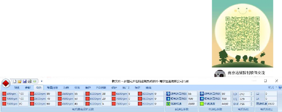
742 及以上版本增加了油门自学习功能，自学习时转到底，控制器会自动识别转把/踏板的油门信号最大电压，并根据这个电压生成油门高阈值。
产品型号
日期:
时间:
型号: 控制器型号
限流
电机限流保护系数：
限流里面的 500RPM,1000RPM,…….8500RPM,9000RPM 的换算。
这些转速是以参数里面标定的对极数的转速。对应的参数也是该转速下的参数。而对于实际极对数大于等于 16 的电机，则需要做一个换算。
通常轮毂电机的极对数是 16，20，24，28，30 对极。而通常中置电机是 3、4、5、7、8、14 对极。
在参数里面的极对数=4 的情况下，电机转速=上位机上的转速*4/电机实际极对数。比如轮毂电机极对数是 16
那么

500RPM 对应的 16 对极轮毂电机实际转速就是 125RPM.
1000RPM 对应的 16 对极轮毂电机实际转速就是 250RPM.
4000RPM 对应的 16 对极轮毂电机实际转速就是 1000RPM.
5000RPM 对应的 16 对极轮毂电机实际转速就是 1250RPM.
5500RPM 对应的 16 对极轮毂电机实际转速就是 1375RPM.
6000RPM 对应的 16 对极轮毂电机实际转速就是 1500RPM.
6500RPM 对应的 16 对极轮毂电机实际转速就是 1625RPM.
8000RPM 对应的 16 对极轮毂电机实际转速就是 2000RPM.
弱磁限制：逐步增加限流参数
限流值的设定，是从安全值开始，逐步增加转速，一定要保证弱磁不能过度。一旦发现空转转速不稳定甚至出线MOE 或者OVER 保护，则表明该转速太高了，弱磁过度了，参数要改回来。
我们设定的限流值应根据实际需求来考虑。对于定速为 1000RPM 的电机来说，考虑弱磁深度为 50%。最高转速也考虑在 1500RPM，并且希望电机不要工作在 1625RPM以上。所以限流值设定，在 6000RPM 为 30%，6500RPM 及以上转速设定为 5%以下.
这样保证电机在空转时也就弱磁 50%。而不会弱磁过深引起电机抖动甚至烧控。
很多电机，弱磁深度可以到达 100%,1000RPM 电机能够工作在 2000RPM 高转速上。对于这种电机，为了发挥更高的性能，可以把限流系数继续扩大，8000RPM 以内限流 参数可按正常值 70 以上设置，8500 设置在 30,9000RPM 设置在 5 以下.
速度控制等级：
速度控制等级：默认 4 个等级：BOOST 档，高速档，中速档，低速档。
BOOST 档：手机 APP/电脑上显示 Bst。在 BOOST 功能开启有效，BOOST 时间由
4.3 参数控制，BOOST 以出厂的客户最大线电流、最大相电流和限流系数限制条件下工作。
高速档：手机 APP/电脑上显示 D。高速档受最大线电流、最大相电流、限流系数和最大转速限制条件下工作。
中速档：手机 APP/电脑上显示 DM。中速档以中速线电流比例、中速相电流比例以及受到中速转速限制。
低速档：手机 APP/电脑上显示 DL。低速档以低速线电流比例、低速相电流比例以及受到低速转速限制。
低速档参数

低速线电流比例，低速相电流比例，低速转速
中速档参数
中速线电流比例，中速相电流比例，中速转速
LDVOL
200-900,默认 900,
高速段空转噪音的匹配及最高速的动力和省电之间的均衡
LQVOL
中间油门电压（mV, VQH+4 中间油门启用，0~4000）。
限速电流，（0~4000，单位 1/4A）
FAIF：
0~513
0
起步共振特性匹配选项 1
注意车辆电机性能好的时候，VQH+64=六倍速度霍尔检测能进一步降低共振噪音。
16~63
起步共振特性匹配选项 2
64~256
一般车辆电机霍尔特性
384
跳跃型车子AB15 容易报错时选择 384/512。
512
513
CN 控制器绝对值编码器情况下忽略 AB15 告警。
其他控制器：容易 AB15 报错的时候用
+1024
固定蓝牙密码为产品编号相关
（其他选项不要使用）
L2,L4：保留
限速转速：用于摩斯密码限速的转速。
能量回馈
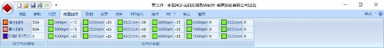
对于回油门刹车功能，在骑行过程中，回油门后就进入电子刹车态.
对于电子刹车功能，在刹车时，整车给出刹车信号送到控制器，控制器检测到刹车信号后即进入电子刹车态。
注意要使用电子刹车功能时，必须在跟随项中选择电子刹车或者回油门刹车来启用此
功能。并设置回流电流。注意设置参数时最大回流一般比停止回流大 25%~50%。
刹车电流限制：
停止回流：
电子刹车的刹车电流。默认 2A，需要电子刹车力度时根据需要改成 5A-20A，对于四轮车的大容量电池，其反充电电流允许更大，可以设置到 20A-60A。
最大回流：
电子刹车的峰值刹车电流:默认 4A,需要强刹车时可以设置到 10A-40A，对于四轮车可以考虑 40A-80A。
回油门刹车点：
默认 0，回油门的速度越快刹车力度越小。速度慢，刹车力度轻。 1：回油门的时候刹车力度最大。
在这个转速以上，转把回一半就是匀速不加速也不减速状态。 比如 4000 表示 0-
4000 转速度越高越接近于一半油门值，4000 转以上中间油门值都是匀速不加速不减速状态。转把高于中间值加速，低于中间值，减速，转把回越多，刹车越厉害。
负电流系数：
控制反充电电流的比例系数，在 500rpm,1000rpm,…,9000rpm 各转速下控制。系数最大值为 0，最小值为-100.越是接近于-100 负电流越多。
普通二轮车，对于 400A 左右的控制器，负电流系数-10%~-30%就够了。其他控制器根据情况调整，为了行车安全，可以从-10%开始调试，如果觉得不够，再改成-15%，-20%，不要一下子设置到-50%~-100%，这样的操作容易带来急刹车的危险。
旧版本控制器不带负电流系数。
功能
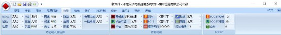
功能输入脚
BOOST:选择 BOOST 功能按钮输入脚，选择无效将不启用此功能
巡航：选择巡航功能按钮输入脚，选择无效将不启用此功能
P 档：选择P 档功能按钮输入脚，选择常闭将不启用此功能
前进：选择前进档功能线输入脚，选择无效将不启用此功能
后退：选择后退档功能线输入脚，选择无效将不启用此功能
高速：选择高速档功能线/按钮输入脚，选择无效将不启用此功能
低速：选择低速档功能线输入脚，选择无效将不启用此功能
充电：选择充电保护功能线输入脚，选择无效将不启用此功能
防盗：选择防盗功能功能线输入脚，选择无效将不启用此功能
座桶：选择座桶功能线输入脚，当坐人时，解除 P 档后正常行驶，否则不能行驶。如果启用了推行功能，不坐人时启动推车辅助。选择常闭则根据 VCU 指令识别坐桶信号和推行功能。选择无效将不启用此功能。
限速：选择限速功能线输入脚，选择无效将不启用此功能
电压切换：选择额定电压切换功能线输入脚，选择无效将不启用此功能电压切换脚=PIN8 的时候为国标限速的电压脚切换，速度脚特殊定义
一键修复：选择一键修复功能线输入脚，选择无效将不启用此功能。注意选择开关驻车功能时，一键修复这个脚作为此功能的开关。
注意除了 P 档可能选择常闭外，其他脚一般不选择常闭，否则影响功能使用。这里可选的引脚定义说明
选项
6/12 管 NS 系
列
旧款控制器通用霍尔接
口
18G 以上
485 控制
器
YJCAN
YJBMQ CAN
旧款编码器接口
备注
常闭
常闭
常闭
常闭
常闭
常闭
常闭
PIN2
2 脚
-
-
-
-
PIN3
3 脚
7 脚
24 脚
3 脚
3 脚
3 脚
PIN5
5 脚
5 脚
3 脚
-
-
5
CAN 版本
不能用
PIN8
8 脚
8 脚
14 脚
8 脚
8 脚
PIN9
9 脚
-
-
-
PIN14
14 脚
17 脚
18 脚
2 脚
2 脚
PIN15
15 脚
4 脚
2 脚
-
-
4
CAN 版本
不能用
PIN17
17 脚
30 脚
-
17 脚
-
-
编码器版
本不能用
PIN18
18 脚
-
-
14 脚
14 脚
-
PIN24
24 脚
25 脚
15 脚
24 脚
24 脚
PD0
无效
无效
无效
无效
无效
无效
无效
特制功能
高低速：
仅高速：只需要高速挡
加减档：按钮加减挡
点动高低速：点动 2 速：高速+低速
点动高中速：点动 2 速：低速+中速,（H58 版本）
点动三速低：点动 3 速，默认低速挡
点动三速中：点动 3 速，默认中速挡
点动三速高：点动 3 速，默认高速挡

点动四速低：点动 4 速，默认低速挡
点动四速 2：点动 4 速，默认 2 速挡
点动四速 3：点动 4 速，默认 3 速挡
点动四速高：点动 4 速，默认高速挡
拨动三速：拨动 3 速
串口挡位：串口控制挡位，默认低速挡助力车的串口仪表。XM，
CAN 挡位：CAN 控制挡位，默认低速挡
无效
长按后退：
有效时，必须长按后退键切换成后退。默认无效，根据后退线切换后退。
挡位：
挡位
说明
0-默认空挡
启动默认 N 档，FW 接地=前进，RE 接地=后退
1-默认前进
启动默认前进档，RE 接地=后退，可以有P 档（同N）
2-反向空档
FW 接地=空挡，否则 RE 接地=后退，RE 悬空=前进
3-默认点动低
H 系列：FW 悬空的时候进入防盗报警锁止。接地允许行驶
其他系列：默认前进低速
4-默认点动中
其他系列：默认前进中速，点动
5-默认点动高
其他系列：默认前进高速，点动
刹车：
刹车功能：不捏刹车时可以行车，捏刹车时断开油门。
浮空行车：捏刹车时高刹线接 12V 或者电池电压。或者低刹脚接通电池地。注意刹车线信号是不隔离的。不捏刹车时，2 根线都应该是浮空状态。
浮空断电：捏刹车时高刹和低刹 2 根线都浮空。不捏刹车时高刹线接 12V 或者电池电压，或者低刹脚接通电池地,注意刹车线信号是不隔离的。
P+浮空行车：除了具备浮空行车功能外，捏刹车的同时解除P 档状态。 P+浮空断电：除了具备浮空断电功能外，捏刹车的同时解除P 档状态。无效：
默认浮空行车。
PC13：
旧款控制器参数：浮空行车、浮空断电、浮空巡航、接地巡航、无效。
H 系列控制器参数：正常响应和赛道响应。
摩斯密码：
通过上位机更改摩斯密码可设定 6 位以放开速度，为 000000 时不限制，为其他密码时限制速度：每次开机时必需操作摩斯密码才能解除限速。
设置 7 位摩斯密码则是速度限制开关，同样也是操作后面 6 位数字，操作一次速度限制转换一次：原来如果是限速状态，则变成非限速状态，反之亦然。这个转换保存在控制器内部，以后开机都是切换到这个状态。
驻坡：
挂挡驻坡：在前进或后退时，松开油门会驻坡，空档不驻坡，陡坡缓降功能无效。 P 档驻坡：在 P 档状态下驻坡，其它状态下根据陡坡缓降参数设定是否启用陡坡缓降功能。
无效：驻坡功能和陡坡缓降功能无效。
跟随：
跟随：电机启用一定的怠速无效：屏蔽跟随和电子刹车
电子刹车：捏刹车时启动电子刹车。
回油门刹车：回油门时启动电子刹车
陡坡缓降：
无：不启用陡坡缓降。
1~7：数字越小陡坡缓降反应越慢，数字越大缓降反应越快。
驻车效果：陡坡缓降数字小后退会多但是平稳，数字大后退少但是太大会前冲。
BOOST
BOOST 时长：
BOOST 启动后的持续时间默认 45 秒，最大 131 秒；
BOOST 间隔：
BOOST 结束后，再次启动BOOST 需要间隔的时间，默认 90 秒，最大 131 秒；
仪表
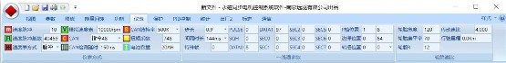
仪表方式
控制器带有 3 个信号输出脚,其中
12 管控制器和 NS 系列控制器：13 脚RXD,18 脚ALARM/SPD,9 脚 SPA
旧版控制器：3 脚 RXD,9 脚 SPD,10 脚 SPA，H 系列控制器的扩展码都会标明字符 A~G
速度脉冲：
这个值 1-31，影响脉冲速度输出和一线通速度显示。数字越大，表显示速度越高。
速度脉冲基数：
速度脉冲表的校准基数。更改这个值只影响速度脉冲表的速度显示。轮毂默认 40459，中置默认 26043
速度表方式：
脉冲/模拟/隔离脉冲
模拟速度表：
相线仪表电压表示速度的仪表采用的系数，调整这个系数可以改变显示的速度。
CAN：
指令号，Hxx 版本默认 60，以前版本根据协议不同，指令号不同 CAN=59:支持无人驾驶系统，需专用 CAN 配置参数 CAN=48:（H80 版本）从串口切换到 CAN 分析仪调试
CAN 检测延时：
默认 150ms 个别客户要求 1900ms
一线通参数
一线通显示注意引脚不要错：12 管以下一般选择 18 脚一线通，个别驱动共享的配置用 13 脚一线通。NS 系列 18 管以上控制器同 12 管。18 管以上的旧版控制器一般 9 脚一线通。

步长：
大部分一线通为 0.5 或者 0.9。默认 0.5，可选 0.9 ,1.2, 1.9
间隔时长：
大部分一线通支持 55ms,默认 55ms,可选 24 ms，144 ms，216ms;
PULSE ：
默认 0，自定义时非 0
SQH:
默认 0：自定义时非 0
特殊帧：
参数
列举 6 组参数，不同一线通仪表其参数不
同，常用的是第一组参数
参数组
1
2
3
4
5
6
7
PULSE
0
0
0
0
10
0
0
SQH
0
0
0
0
1
0
0
DATA0
(8)
0x08
(89)
0x59
(24)
0x18
(3)
0x03
(16)
0x10
(81)
0x51
(16)
0x10
DATA1
(97)
0x61
(66)
0x42
(2)
0x02
(1)
0x01
(18)
0x12
(0)
0x00
(149)
0x95
以下 0-255 定义了特殊帧类型。
特殊帧
说明
1
0~1
非一线通
0 ： 速度脉冲 ，（ 显示调节： 速度脉冲基数越大显示速度越慢
500~65530,V39 及以前版本是 5000~65530）
1：READY 灯：（READY 状态为输出高，否则输出低）
2:风扇控制：(温度低于 40°为输出高，高于 40°为输出低)
3: 特殊串口指令 BF_ZHULI
4：特殊串口指令ZHULI 助力脉冲检测(PIN3)
5: 特殊串口指令 KM5
6：特殊串口指令UK1
7：特殊串口指令
步长、间隔时长、PULSE=0、SQH=0,DATA0-DATA1,SEC0-SEC7 无效
2
16~31
通用一线通 2
不同仪表，DATA6/DATA9/DATA10 需要送出的内容不同，参考通信协议选择以先内容：
DATA6: 字节选项=3 时输出 0，否则输出电流值。参考下表
DATA9 选项: 参考下面的DATA9/DATA10 选项表 DATA10 选项: 参考下面的 DATA9/DATA10 选项表
特殊帧=16+ DATA9 选项+ DATA10 选项，一般一线通=21
步长建议 0.9ms、间隔时长建议 144ms，有些需要 216ms 才正常，
SEC0~SEC7 默认全 0
3
32~40
无一线通，内置蓝牙
特殊帧：32-TBIT，33-XZ_CONTROL，34-XMZSBXX，35-XM3SPEED，
36-M2S，37-CN
步长、间隔时长、PULSE=0、SQH=0,DATA0-DATA1,SEC0-SEC7 无效
4
48~223
加密一线通,内部SEC
不同仪表，DATA6/DATA9/DATA10 需要送出的内容不同，参考通信协议选择以先内容：
基数= 48 64 80 96 112 128 144 160 176 192 208
基数
DATA0
SEC0
。。。
48
0X08
0X6B
。。。
64
0X07
0X9C
。。。
80
0X30
0X73
。。。
96
0X27
0X0E
。。。
112
0X10
0XBA
。。。
128
0X2B
0X2C
。。。
144
0X5
0XB2
。。。
160
0X5
0X2B
。。。
176
0X25
0XEA
。。。
192
0X0A
0X2C
。。。
208
0X1F
0X9E
。。。
DATA6: 字节选项=3 时输出 0，否则输出电流值。 DATA9 选项: 参考下面的DATA9/DATA10 选项表 DATA10 选项: 参考下面的 DATA9/DATA10 选项表特殊帧=基数+DATA9 选项+ DATA10 选项
步长建议 0.9ms、间隔时长建议 144ms，有些需要 216ms 才正常， PULSE=0,SQH=0。DATA0-DATA1,SEC0-SEC7 无效
SQH=255 时 SQH 保持无效（特定协议要求-H43 版）
5
224~239
加密一线通,外部SEC
DATA6: 字节选项=3 时输出 0，否则输出电流值。 DATA9 选项: 参考下面的DATA9/DATA10 选项表 DATA10 选项: 参考下面的 DATA9/DATA10 选项表特殊帧=224+DATA9 选项+ DATA10 选项
专业人士使用，所有参数均可修改：
步长建议 0.9ms、间隔时长建议 144ms，有些需要 216ms 才正常，
PULSE,SQH,DATA0-DATA1,SEC0-SEC7 均可以修改。
6
240~255
特殊帧:
241：ATN15 字节（PULSE,SQH,DATA0-DATA1,SEC0-SEC7 无效）
242：30 号一线通，P 档在 DATA4
243: 一线通：0x52,0x51
244：F2 一线通，SEC0=0 表示 F0,其他数字表示 F2
245：告警灯同步输出，
246：在使用 485 接口时必须特殊帧=246 方便电脑 485 连接
247：15 字节一线通, SQH=255 时 SQH 保持无效（特定协议要求-H43版）
248：13 字节一线通, SQH=255 时 SQH 保持无效（特定协议要求-H43版）
253：DY 一线通，
254:不带蓝牙的 485
所有参数均可修改。
参数
参数组，
参数组代号
31
26

5
步长
0.9
0.9
0.9
间隔帧 ms
144
216
144
特殊帧
248
247
247
NOSQH,
YJ 一线通,SEC0=255 允许 24 脚选择脉冲/一线通
PD0 检测一线通，
PA15 检测一线通
PULSE
0
0
0
SQH
0
0
0
DATA0
(84)
0x54
0
7
DATA1
(83)
0x53
0
0
SEC0
0
0
156
SEC1
0
0
247
SEC2
0
0
207
SEC3
0
0
202
SEC4
0
0
187
SEC5
0
0
11
SEC6
0
0
170
SEC7
0
0
127
P 档位置
3
1
1
边撑位置
2
1
8
转把位置
0
8
8
防盗位置
8
0
8
电流系数
64
64
64
字节选项
3
3
3
字节选项
0
1
2
3
DATA6
0
电流
电流
电流
DATA9
0-电压
电量
电量
0
DATA10
电量
电流百分比
电压
0
DATA9/DATA10 配置选项表
DATA9
DATA9
DATA10
DATA10
选项
选项
0
字节选项=0:电压单位 1V
0
字节选项=0:电量
字节选项=1:-
字节选项=1：-
字节选项=2:电压单位 1V
字节选项=2:第二组电池电量
字节选项=3:-
字节选项=3:-
4
字节选项=0:电量
1
字节选项=0:电流比
字节选项=1:电量+0x80
字节选项=1：-
字节选项=2:第一组电池电量
字节选项=2:-
字节选项=3:-
字节选项=3:-
8
字节选项=0:电压 单位 0.5V
2
字节选项=0:电压单位 1V
字节选项=1:
字节选项=1：-
字节选项=2:
字节选项=2:-
字节选项=3:-
字节选项=3:-
12
字节选项=0:A 组额定电压
3
字节选项=0:A 组额定电压
字节选项=1：B 组额定电压
字节选项=1：B 组额定电压
字节选项=2: C 组额定电压
字节选项=2: C 组额定电压
字节选项=3: 0
字节选项=3: 0
特殊帧=基数+DATA9 选项+DATA10 选项。
P 档位置
0-3：字节 2 的 BIT 位置
8：不显示。
11：字节 4 的 BIT 位置 3（H40 增加）
13：字节 2=0x0a/0x08（H40 增加）
14：字节 2=0X0E（H40 增加）
15：字节 2=1/8 切换（H40 增加）
边撑位置
0-3：字节 2 的 BIT 位置
7：字节 3 的 BIT7
8：不显示。
转把位置
0-3：字节 2 的 BIT 位置
8：不显示。
防盗位置
0-3：字节 2 的 BIT 位置
8：不显示。
SPA 输出信号说明：
1
特殊帧<16
输出模拟电压
2
特殊帧>=16,OBD 有效
做 OBD 告警灯指示用
3
特殊帧>=16,OBD 无效，新国
标超速提示有效
超速时输出高压
4
特殊帧>=16,OBD 无效，新国
标超速提示无效
有告警时，输出告警脉冲。
无告警时，P 档下输出电压
DATA0：
HEAD 默认 8,自定义时采用其它值
DATA1 :

HEAD2,默认 97，用 SEC0~SEC7 时=0
SEC0~SEC7:
默认 0，自定义=非 0
P 档位置:
0-3：P 档在字节 2 的 BIT 位置
7: P 档在字节 5 的 BIT 位置 7（V40 增加）
8：P 档不显示。
11：P 档在字节 4 挡位置 0（V57 增加）
13：P 档在字节 2=0x0a/0x08（V40 增加）
14：P 档在字节 2=0X0E（V40 增加）
15：P 档在字节 2=1/8 切换（V40 增加）
边撑位置
0-3：边撑在字节 2 的 BIT 位置
7：边撑在字节 3 的 BIT7
8：边撑在不显示。
转把位置
一线通里面转把控制显示位（0~3，默认 3），若不用设置为 8
防盗位置
一线通里面防盗指示显示位（0~3，默认 8），若不用设置为 8
电流系数
默认 64， 640=0.1A,320=0.2A 128=0.5A,64=1A，32=2A,
字节选项
0，1，2，3：联系远驱调参数
一线通调试
市面上大部分一线通默认 21，字节选项=3 的情况基本上能显示速度了，有些仪表则不能显示。可以在使用一线通但不知道协议的情况下, 步长建议 0.9ms、间隔时长建议 216ms，尝试一线通看看仪表是不是有反馈：
先尝试特殊帧 16，字节选项=3，
先尝试参数组 1： PUSLE=0,SQH=0,DATA0=8,DATA1=97。
不通则尝试参数组 2： PUSLE=0,SQH=0,DATA0=89,DATA1=66。
如果还不通则参数其他参数组。具体见后面的表格。
如果所有参数组无效，则进入 3.2.
特殊帧 16 没反应则改成 16,32,48,64,80,96,112, 128,144,160, 176,192,208。
一般情况下尝试以上特殊帧就能找到正确的一线通了，针对细节电压、电量显示不对则小范围修改特殊帧能满足要求：比如找到 48 速度能正常显示，而电压电量或者电流显示不对，那么可以尝试修改特殊帧 48~63 之间的数字来修正。又比如找到 160 速度能正常显示，而电压电量或者电流显示不对，那么可以尝试修改特殊帧 160~175 之间的数字来修正。对 P 档显示不准确的，可以修改P 档位置以满足显示要求。
对以上操作都不能正确显示一线通的，考虑步长 0.5ms 再试试 3.1-3.3 步骤。
对以上操作都不能显示一线通的。要考虑特殊帧 247 或者 248。
10 以上都不行则需要联系远驱分析具体 224 或者 240~255 的其他特殊帧了。

轮胎速比
注意要设置正确，速度里程计算才会正确。
轮胎宽度
以 120/70/R12 为例子，轮胎宽度=120
轮胎扁平率
以 120/70/R12 为例子，轮胎扁平率=70
轮毂R
以 120/70/R12 为例子，轮毂 R =12
传动速比
霍尔版轮毂电机极对数=20 时，按 4 对极计算出传动速比=20/5=5
行驶里程
控制器行驶的总里程。
保护
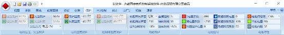
电压保护
过压保护、恢复，
内部根据额定电压设置
欠压保护、恢复
在电池电压接近欠压保护点时，控制器降功率输出，使得电池不会过于放电而损坏。一般电池欠压设定如下：
额定电压
48V
60V
72V
84V
96V
108V
欠压保护点
42V
52.5V
63V
73.5V
84V
94.5V
欠压方式
2V：比欠压点高 2V 以上不降功率，到达欠压点+2V 时开始降功率。
4V：比欠压点高 4V 以上不降功率，到达欠压点+4V 时开始降功率。
8V：比欠压点高 8V 以上不降功率，到达欠压点+8V 时开始降功率。
12V：比欠压点高 12V 以上不降功率，到达欠压点+12V 时开始降功率。
16V：比欠压点高 16V 以上不降功率，到达欠压点+16V 时开始降功率。 龟速电量 5%：电池容量小于等于 20%降功率，小于等于 5%采用龟速回家。龟速电量 6%：电池容量小于等于 30%降功率，小于等于 6%采用龟速回家。龟速电量 7%：电池容量小于等于 40%降功率，小于等于 7%采用龟速回家。龟速电量 8%：电池容量小于等于 50%降功率，小于等于 8%采用龟速回家。龟速电量 9%：电池容量小于等于 60%降功率，小于等于 9%采用龟速回家。
龟速电量 10%：电池容量小于等于 70%降功率，小于等于 10%采用龟速回家。 SOP 值：根据 BMS/CAN 总线接收的最大允许线电流 SOP 值限制功率。
其他：

温度保护
电机温度保护、恢复：
内部设定
控制器温度保护、恢复：
内部设定
温度系数
功能保护
转把丢失报警：
有效/无效
油门插拔保护：
1 表示油门插拔会引起保户，防止带电插拔引起的飞车， 0 表示不保护。
回 P 空闲时间：
默认 10 秒
座桶延时：
默认 1 秒
堵转时间：
单位 0.1 秒，设置 50 就是 5 秒。
驻车时间：
默认 0.1 秒，最大 132 秒；注意 0~131 秒是到时间就会取消驻车，而设置 132 秒会长时间驻车，一直到控制器或者电机过温后才并且会取消驻车。
电池保护
0 电量系数：
校准 0 电量显示的参数。
控制器本身可以估算电池电量，通过调整 0 电量系数和满电量系数可以获得比较准确的电量显示。
在电池电量满的时候，调整满电量系数，使得显示容量刚好为 100%。
在电池电量没电的时候，调整 0 电量系数，使得显示容量和电量基本相符。比如剩余 10%电量的时候，调整 0 电量系数使得电量显示刚好为 10%。

满电量系数：
校准满电量显示的参数。
限速起始电量：
电量限速算法的起始电量
限速极限电量：
电量限速算法的极限最低电量
限速极限系数：
根据电量限速算法的极限系数
龟速限流系数：
龟速限流系数默认 53，龟速电流=用户出厂最大电流*龟速电流系数/2048;
电池特性
电池信号源
选项
内容
说明
0
一线通
通过一线通获得电池的 SOC
1
串口
通过串口获得电池的 SOC
2
CAN
通过CAN 通获得电池的 SOC
3
锂电池
通过三元锂电池特性计算模拟 SOC
4
铅酸
通过铅酸电池特性计算模拟 SOC
5
铁锂(H72)
通过磷酸铁锂电池特性计算模拟 SOC
当前电量
显示当前电池的电量。
电池内阻
基础值：0~255，默认 8
功能
+256
测电第二油门/刹车电压
不加
检测电门锁电压
+512
PD 协议
不加
OP 协议
+1024
协议 2
+1536
协议 3
+2048
协议 4
+2560
协议 5
+3072
协议 6
+3584
协议 7
+4096
8 倍 PID，普通用户不要更
改，否则容易损坏控制器
电流传感器类型>=2 不支持
+8192
2 倍 PID
电流传感器类型>=2 不支持
+12288
4 倍 PID
电流传感器类型>=2 不支持
基础值=16053/16759 允许开启特殊弱磁（深度弱磁）
PID 控制
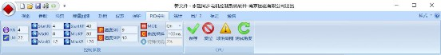
AN：
电机本体特性 AN 值，参数范围 0~16。
标准表贴电机 AN=0. 标准IPM 电机 AN=16.
这个参数设定一定要符合电机特性。轮毂电机，表贴中置电机， AN 小于 8。内嵌中置电机AN 值则不小于 8。与远驱配合的编码器中置电机，汽车永磁同步电机，均采用AN=16。
市面上所有轮毂电机均属于表贴电机，AN 值一般设定为 0，不超过 4。AN 值设定不对，会导致起步效率变低，
甚至出现 MOE/OVER 保护。
LM:
整车电机加速匹配参数，这个值用来调整电机在整车上的运转流畅性。汽车默认设置是 22，电摩默认 18。有些小功率三轮车 10 以下更合适。
但是有个别电机类型和整车匹配很差，起步低速段，中速段会感觉到明显的共振抖动.调整 LM 值会有改善.
先从 22 开始，若低速段加速抖动，则降低LM，从 16，14，12，11，8，5 开始测试效果,中间那些数字也会起作用，一般考虑宁可大些，尽量不要太小。太小会控制不住电流，引起 MOE/OVER 保护，甚至烧控。所以当抖动消失后的 LM 值就是最佳参数，不要再调小。
有些电机和整车在 LM=22 时非常流畅，但是改小后反而会带来抖动，所以要注意在 LM=22 的情况下没有问题就不去调节这个参数。
或者发现抖动共振出现后，LM 值从 22 改小 16，14，。。。甚至 5 都没多大效果，则说明和这个参数无关，此时一定要改回到最大值，比如 22，而不是随意一个数字保留在控制器里面。
PID 参数：StartKI,MidKI,MaxKI / StartKP,MidKP,MaxKP.
默认参数 StartKI=4,MidKI=8,MaxKI=12 / StartKP=40,MidKP=80,MaxKP=120.
电机功率越大，电压越高，PID 越小。PID 参数不能随便填写，否则会导致工作不正常甚至烧控。以下是常用的PID 设定参数值。总共 9 套，选择其中一套参数用于匹配电机整车，在专业人士的指导下进行修改。
StartKI
MidKI
MaxKI
StartKP
MidKP
MaxKP
1
1
1
1
10
10
10
冲浪板默认
2
2
2
3
20
20
30
超大功率电机
3
3
3
4
30
30
40
4
4
4
6
40
40
60
大功率默认
5
4
5
8
40
50
80
6
6
6
9
60
60
90
中功率电机
7
6
7
10
60
70
100
8
8
8
12
80
80
120
中小功率默认
9
8
9
13
80
90
130
10
8
10
15
80
100
150
11
8
11
16
80
110
160
12
10
12
18
100
120
180
13
10
13
19
100
130
190
14
10
14
21
100
140
210
15
10
15
22
100
150
220
16
16
16
24
160
160
240
小功率电机
注意 PID 参数设置不当都会引起系统工作不正常，甚至出现 MOE/OVER/PHASE 故障等，差异太大会引起烧控，要特别注意。
注意有些小功率电机 PID 参数超过控制器调试范围，这种情况请联系远驱来解决。
速度 SKI,SKP
SKI 最小 1，最大 18，车子重KI=18，车子轻KI=2,默认 KI=9, SKP5~20，默认 10
MOE：
MOE 默认On 开启保护,选择 Off 关掉保护,注意正常情况下不允许关闭。
曲线采样:
以 ms 为单位间隔采样，Hxx 及以上版本加速曲线 2560 个点，以下版本加速曲线总共有 510 个点，比如设置 100ms 采样，那么加速曲线 510 个点，总时间是 256 秒/51 秒。
特殊代码
正常代码版本
特殊代码
版本
特殊代码
霍尔速度 128 普通版
1
8 倍 PID
+8
霍尔速度 256 轻跳版
2
检测刹车电压
+16
霍尔速度 384 普跳版
3
旧控制器
+64
霍尔速度 512 跳跃版
4
RS485
+128
特定 SERIAL8
+256
特定 SERIAL12
+512
特定 SERIAL16
+1024
高速版
+4096